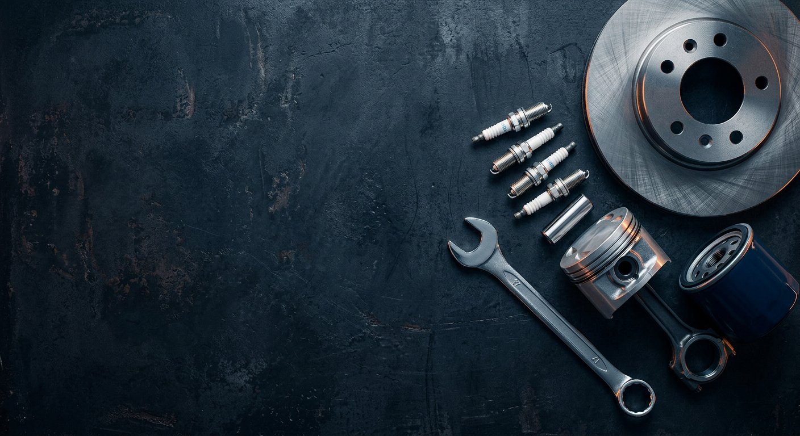

01 / FIND
از هر سرنخی شروع کن
نام قطعه یا شمارهٔ فنی؛ با ورودی فارسی و لاتین. جستوجوی واقعی پس از کاتالوگ معتبر فعال میشود.
تصویری از آیندهٔ فروشگاه: جستوجوی ساده، بررسی سازگاری و اطلاعات روشن. نتیجهٔ واقعی فقط بعد از اتصال دادههای تأییدشده نمایش داده میشود.

این بخش قابل کلیک است، اما هنوز به محصول یا خودرو متصل نیست.
هیچ عبارت جستوجویی به سرور یا سایت اصلی ارسال نمیشود.
هیچ فهرست خودرو یا نتیجهٔ سازگاریِ حدسی نمایش نمیدهیم. بعد از دریافت اطلاعات تأییدشده، این مسیر فعال میشود.
برای خرید قطعه، سؤال اصلی این است: «به خودروی من میخورد؟» طراحی باید به این سؤال جواب روشن بدهد؛ نه حدس و نه یک برچسبِ بیمنبع.
نام قطعه یا شمارهٔ فنی؛ با ورودی فارسی و لاتین. جستوجوی واقعی پس از کاتالوگ معتبر فعال میشود.
مدل، سال و موتور خودرو مهماند. تا وقتی تطابق مستند نباشد، وضعیت را «نامشخص» نشان میدهیم.
قیمت، وضعیت تأمین و مسیر خرید فقط زمانی نمایش داده میشوند که واقعی، قابل پیگیری و تأییدشده باشند.
کارت محصول، دستهها، قیمت و نشان سازگاری را با اطلاعات نمونه پر نمیکنیم. وقتی اولین گروه کالای تأییدشده آماده شد، همین بخش روی دادهٔ واقعی طراحی و آزموده میشود.
برای شروع چه چیزی لازم است؟اول اطلاعات معتبر؛ بعد تصویر، قیمت و دکمهٔ خرید.
هر مرحله یک خروجی مشخص دارد؛ هیچ مرحلهای را با دادهٔ ساختگی جلو نمیبریم.
شما ظاهر و مسیر جستوجو را میبینید و میگویید چه چیزی باید عوض شود. من بر اساس بازخوردتان نسخهٔ بعد را آماده میکنم.
بکاپ قابل بازیابی، محیط Staging و بررسی تنظیمات سایت؛ بدون دستکاری مستقیمِ قالب اصلی یا تغییر Production.
با چند کالای تأییدشده، مدل دسته، برند و سازگاری را میبندیم و ورود آزمایشی را روی Staging انجام میدهیم.
پیادهسازی مرحلهای، آزمون خرید آزمایشی و موبایل، نقشهٔ URL و برنامهٔ بازگشت؛ سپس انتشار با تأیید شما.